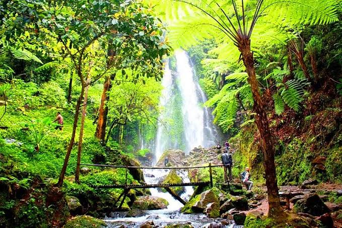
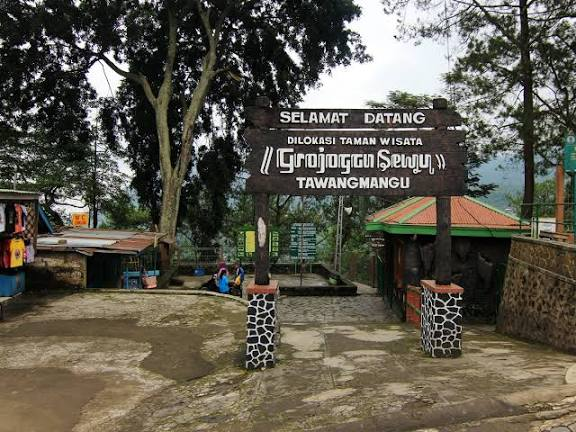

Ada sesuatu yang terjadi pada setiap orang ketika pertama kali berdiri di depan Grojogan Sewu. Deburan air yang jatuh dari ketinggian 81 meter menciptakan kabut tipis yang menyegarkan wajah, suaranya yang konstan seperti meredam semua pikiran yang lain. Orang-orang berhenti bicara sebentar, hanya memandang. Bagi masyarakat Tawangmangu, air terjun ini bukan hanya objek wisata — ia adalah tetangga tua yang sudah menjadi bagian dari kehidupan mereka.
Air yang Membentuk Peradaban Mini
Jauh sebelum Grojogan Sewu menjadi destinasi wisata, air yang mengalir dari ketinggian ini sudah menjadi sumber kehidupan bagi ladang-ladang di lembahnya. Masyarakat sekitar membangun sistem irigasi sederhana yang mengalirkan airnya ke sawah dan kebun sayur yang memberi makan keluarga mereka. Air terjun ini bukan sekadar pemandangan — ia adalah tulang punggung pertanian lereng Lawu di sisi selatan.
"Kalau lagi banyak pikiran, saya suka duduk dekat air terjun ini. Entah kenapa, suaranya saja sudah bikin tenang."
Fakta Menarik
- Grojogan Sewu memiliki ketinggian air terjun sekitar 81 meter, salah satu yang tertinggi di Jawa Tengah
- Nama "Sewu" berarti seribu dalam bahasa Jawa, menggambarkan percikan air yang begitu banyak saat jatuh
- Kawasan sekitar air terjun dihuni kera ekor panjang yang hidup liar dan sudah sangat terbiasa dengan kehadiran manusia
- Aliran airnya dimanfaatkan untuk mengairi ladang sayur dan kebun di lembah-lembah sekitarnya


Mengapa Penting?
Grojogan Sewu mengajarkan sesuatu yang sederhana namun sering terlupakan: bahwa alam yang dijaga dengan baik akan terus memberi — air bersih, udara segar, kesuburan tanah, dan tempat bagi jiwa yang lelah untuk beristirahat. Menjaga air terjun ini tetap bersih dan lestari berarti menjaga fondasi kehidupan bagi ribuan orang yang tinggal di sekitarnya.